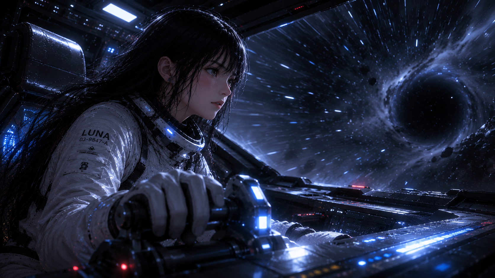
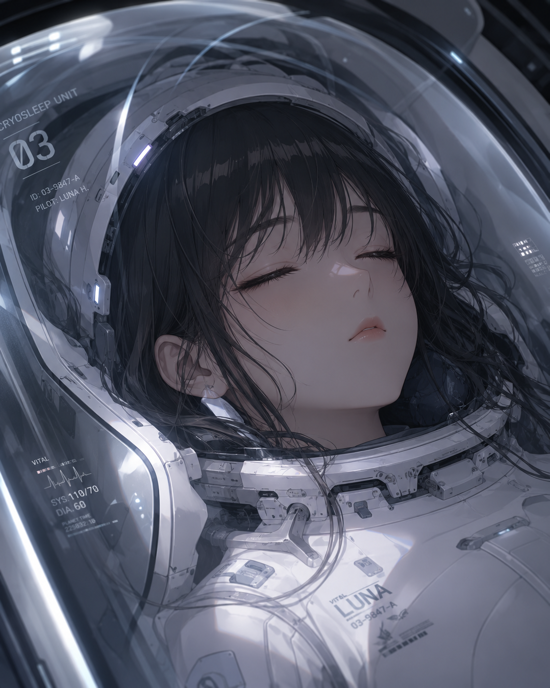

ELITE FORCES // MISSION ARCHIVE
THE VOID
01 / 02
MISSION LOG // LUNA H.


ELITE FORCES // MISSION ARCHIVE
01 / 02
MISSION LOG // LUNA H.
MISSION SYSTEM
Buffering mission state…
PLEASE STAND BY // LOCAL VESSEL LINK
BIOLOGICAL STATUS // SIGNAL LOST
Luna was discovered in the dark. Her suit transmission ended before the organism withdrew.
MISSION ARCHIVE // DEMO BUILD 1.0
Luna has survived the first incursion and reclaimed the ship. The silence does not last.
THE VOID WILL CONTINUE